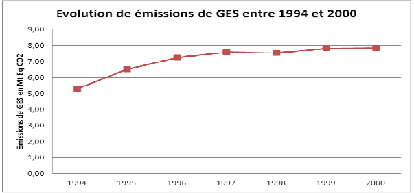

Septembre 2015
Nous sommes heureux de présenter la Contribution Prévue Déterminée au niveau National (CPDN) de la République d’Haïti qui donne des informations pertinentes sur l’effort proposé pour faire face aux aléas climatiques. Ce document fixe les orientations sur lesquelles reposeront les actions de l’Etat haïtien au cours des quinze prochaines années pour s’adapter aux changements climatiques et réduire de 31% ses émissions de Gaz à Effet de Serre (GES) par rapport à un scénario tendanciel, d’ici à 2030. Avec cet effort, Haïti demeure l’un des pays du globe terrestre les moins émetteurs de GES.
L’élaboration de la CPDN découle d’un consensus fort entre les pouvoirs publics, la société civile et le secteur privé sur les objectifs à atteindre. De nombreux intervenants ont donc contribué à l’élaboration de ce document qui répond adéquatement aux besoins et aux intérêts du peuple haïtien et s’inscrit dans la droite ligne du Plan Stratégique de Développement d’Haïti (PSDH), du Plan Action National d’Adaptation (PANA) et de la Deuxième Communication Nationale sur les changements climatiques.
Les défis sont nombreux pour le gouvernement et le peuple haïtiens. Haïti doit prendre les mesures nécessaires pour, à la fois, propulser son développement, s’adapter aux changements climatiques et contribuer à la réduction des émissions de gaz à effet de serre. Pour cela, il nous parait important de lier la lutte contre le réchauffement climatique à l’objectif de pays émergent d’ici à 2030 fixé dans le PSDH. Ainsi, notre CPDN est articulée autour de quelques enjeux qui nous paraissent prioritaires :
Les engagements pris dans la CPDN représentent un besoin en financement global de 25.387 milliards USD. Haïti s’attend donc à une véritable conjonction des efforts de la communauté internationale pour continuer à soutenir la lutte contre le changement climatique en vertu du principe « des responsabilités communes mais différenciées », consacré par la Déclaration de Rio sur l’environnement et le développement.
Dominique PIERRE
Ministre de l’Environnement
| Périmètre | Territoire national |
| Année de référence | 2000 |
| Période de mise en œuvre | 2016-2030 |
| Type de contribution | Conditionnelle et inconditionnelle |
| Secteurs pris en compte | Atténuation Energie, AFAT (Agriculture, Foresterie et Affectation des terres), Déchets. Adaptation Agriculture et sécurité alimentaire, Zones côtières, Ressources en eau, Habitat et aménagement du territoire, Santé, Education, Finances publiques. |
| Gaz concernés | CO2, CH4, N2O. |
| Cible inconditionnelle | Réduire de 5% les émissions de GES par rapport au scénario de référence |
| Cible conditionnelle | Réduire de 26% les émissions de GES par rapport au scénario de référence |
| Besoins en financement pour la mise en œuvre | 25.387 milliards USD (Atténuation: 8.773 milliards USD et Adaptation: 16.614 milliards USD) |
Conformément aux objectifs de son Plan Stratégique de Développement (2012-2030), et en ligne avec les stratégies nationales d’adaptation aux changements climatiques et d’atténuation des émissions des gaz à effet de serre (GES), la République d’Haïti communique sa Contribution Prévue Déterminée au Niveau National (CPDN). Petit Etat Insulaire en Développement (PEID) situé dans la région des Caraïbes et seul PMA du continent américain, le pays est très vulnérable aux effets du dérèglement climatique exacerbés par la forte dégradation de son environnement et sa faible capacité de réponse. Les évènements climatiques extrêmes (cyclones, sécheresses, inondations) constituent un frein de taille aux efforts de développement du pays. Il en résulte que la priorité d’Haïti est l’adaptation aux changements climatiques et la réponse aux pertes et dommages.
A travers cette Contribution, Haïti entend : (i) améliorer sa résilience face aux catastrophes liées au changement climatique ; (ii) répondre aux pertes et dommages causés par les phénomènes climatiques extrêmes et (iii) contribuer à l’effort mondial de limitation de l’augmentation de la température de la planète en dessous de 2° C.
Il s’agit pour le pays de s’engager résolument sur la voie d’un développement sobre en carbone et résilient aux changements climatiques, en limitant ses pertes récurrentes de PIB liées aux catastrophes climatiques, en augmentant le stock de carbone et en diminuant sa dépendance énergétique aux énergies fossiles.
L’élaboration de la Contribution d’Haïti est le fruit d’un large processus de concertation. La
démarche participative adoptée a permis de :
passer en revue les principaux documents stratégiques nationaux: Plan Stratégique de Développement d’Haïti (PSDH), Plan d’Action National d’Adaptation (PANA), 1ère et 2ème Communications nationales sur les changements climatiques, Feuille de route pour un système énergétique durable en Haïti, Politique du Ministère de l’Agriculture des Ressources Naturelles et du Développement Rural (MARNDR) pour l’aménagement des bassins versants, Stratégie de Montage de l’Agence Nationale des Aires protégées (ANAP), Plan de relance de la filière café, Profil climatique d’Haïti, Scaling-up Renewable Energy Program (SREP), Programme Pilote sur la Résilience Climatique (PPCR);
consulter les parties prenantes (ministères sectoriels, société civile, secteur privé, agences de développement etc.) pour définir les priorités du pays en matière d’adaptation ainsi que le niveau d’ambition en matière d’atténuation et ;
valider les choix arrêtés dans quatre (4) ateliers régionaux (nord, centre, sud et îles adjacentes).
Selon le dernier inventaire des GES réalisé [1], Haïti n’a émis que 7,832 Mt d’eqCO2 en l’an 2000. La population était de 8.578 millions d’habitants et le PIB de 3357.89 millions de dollars US. Le profil des émissions par secteur et par les principaux gaz est présenté dans les figures ci-dessous.
Entre 1995 et 2000, les émissions haïtiennes de GES ont crû de 20% soit un rythme de 3.1% par an (voir Figure 3). Sur cette période, la population et le PIB ont augmenté respectivement de 1.9% et de 4%.

En matière d’atténuation, la République d’Haïti compte réduire ses émissions de 31% par rapport au scénario de développement tendanciel, représentant en valeur absolue 45.24 Mt éq- CO2. Cet effort, illustré dans la figure 4, est réparti comme suit :
| Objectif inconditionnel | Réduction des émissions de 5% par rapport au scénario de référence à l’horizon 2030, soit un cumul de 10 Mt éq-CO2. |
| Objectif conditionnel | Réduction des émissions de 26% supplémentaires par rapport scénario de développement tendanciel à l’horizon 2030, soit un cumul de 35.24 Mt éq-CO2. |

Les activités relatives aux scénarios conditionnels et inconditionnels sont présentées en annexe.
| Période | 2016- 2030 |
| Approche adoptée | Approche mixte basée à la fois sur résultats et actions. |
| Type decontribution | Réduction des émissions de GES par rapport au scénario de développement tendanciel à travers notamment des projets d’énergies renouvelables et de séquestration de carbone. |
| Périmètre | Territoire national |
| Gaz à effet de serre ciblés | Dioxyde de carbone (CO2), méthane (CH4), protoxyde d’azote (N2O) |
| Secteurs couverts | Energie
|
| Scénario de développement tendanciel (Business As Usual) | Ce scénario prend en compte les politiques et stratégies en place traduites dans le Plan Stratégique de Développement d’Haïti (PSDH)- Haïti émergent 2030. |
| Scénarios d’atténuation | Les scénarios d’atténuation, tant inconditionnel que conditionnel, seront mis en œuvre à travers les projets cités au tableau 1 en annexe. |
| Potentiel de réchauffement global (PRG) 100 ans réf. IPCC version révisée 96 | Les valeurs utilisées sont celles recommandées par le Groupe Intergouvernemental des Experts sur l’évolution du Climat (GIEC) selon la décision 17/CP.8 de la CCNUCC, pour la préparation des inventaires nationaux des Gaz à Effet de Serre (GES). PRG CO2 =1 PRG CH4 = 21 PRG N2O =310 |
| Méthodologie pour l’estimation des émissions | L’inventaire des GES de 2000 a été réalisé suivant les lignes directrices du GIEC 1996, version révisée. Les scénarios d’émissions ont été élaborés à partir du logiciel Long range Energy Alternatives Planning System (LEAP) pour le secteur de l’énergie. Ils se reposent sur les données d’activités, les projections de population et les perspectives macroéconomiques et sectorielles prévues dans le plan stratégique de développement d’Haïti (PSDH)- Haïti émergent 2030. Les émissions du secteur AFAT ont été estimées à partir de l’outil EX-ACT, version 4 et celles des déchets suivant les lignes directrices du GIEC 1996, version révisée. |
| Marché du carbone | La République d’Haïti envisage d’accéder aux marchés du carbone pour financer une partie des mesures conditionnelles de sa Contribution. |
En 2000, les émissions de GES en Haïti n’ont représenté que 0.03 % de l’ensemble des émissions mondiales. Les émissions per capita calculées pour la même année étaient de 0.91 TCO2eq. Malgré son statut de seul Pays Moins Avancé (PMA) de l’hémisphère américain et de Petit Etat Insulaire en Développement fortement victime des catastrophes liées au climat, la République d’Haïti croit fermement au principe de responsabilités communes mais différenciées et veut participer à l’effort mondial de réduction des émissions pour atteindre les objectifs de limitation du réchauffement global en deçà des 2°C. Au terme de cette contribution, le pays veut réduire ses émissions de 31% par rapport au scénario de référence. Cependant compte tenu des capacités limitées du pays, l’atteinte de cet objectif ambitieux en rapport à son potentiel d’atténuation nécessite le support financier, technique et technologique de la communauté internationale.
Haïti, située dans le bassin caribéen, se trouve exposée à beaucoup de phénomènes liés au climat. Les variations du régime pluviométrique, de la température, de la fréquence des tempêtes tropicales sont parmi tant d’autres signaux climatiques observés à travers le pays.
Les scénarios établis en Haïti montrent d’ici à 2030 un accroissement de la température (de 0.8°C à 1°C), une diminution de la pluviosité annuelle de 6 à 20%, un décalage de la saisonnalité des pluies et une augmentation du niveau moyen de la mer. En 2014, Haïti a été classée au quatrième rang mondial de vulnérabilité aux effets des changements climatiques [3].
Au cours des dix dernières années, le pays a souvent été victime des perturbations du climat qui se manifestent surtout par un changement du régime hydrique des bassins versants, l’augmentation des périodes de sécheresses et des pertes en vies humaines dues aux inondations provoquées par les tempêtes tropicales. Les coûts cumulés des impacts du dérèglement du climat sans prendre de mesures préventives sont estimés à 1,8 milliards USD et à 77 millions USD en prenant des mesures d’adaptation à l’horizon 2025 [4].
Compte tenu des différents impacts observés et anticipés, des mesures ont été prises pour augmenter la résilience du pays aux impacts des phénomènes extrêmes liés au climat. Ainsi, en 2006, Haïti a élaboré son Plan d’Action National d’Adaptation (PANA) et met en œuvre un ensemble d’activités découlant du PANA et son Programme Pilote sur la Résilience Climatique (PPRC). De même des efforts d’aménagement du territoire sont en cours pour diminuer la vulnérabilité du pays. Les mesures n’ont néanmoins pas l’ampleur et l’intensité nécessaires pour répondre aux besoins nés des changements en cours notamment en matière de démographie et d’écosystèmes.
Les différentes actions prioritaires identifiées dans le Plan d’Action National d’Adaptation (PANA) ne sont pas toutes mises en œuvre à cause d’un manque de financement et de la faible capacité des institutions publiques. L’accès difficile au financement et aux ressources technologiques appropriées, l’inexistence de cadre réglementaire et législatif en matière d’adaptation au changement climatique constituent autant d’obstacles à la réalisation des activités prévues. En ce sens, le pays a besoin d’un renforcement de capacité technique et institutionnel et d’un soutien technologique et financier pour franchir ces barrières.
Les priorités du pays en matière d’adaptation aux changements climatiques sont :
Aux termes de cette contribution, Haïti s’engage d’ici 2030 à:
Pour la mise en œuvre de sa CPDN, le pays entend définir au cours de la période 2016-2020:
Par ailleurs pour cette période, le pays vise à:
Le cadre institutionnel existant pour la mise en œuvre des actions dans le domaine des changements climatiques repose essentiellement sur le Ministère de l’Environnement à travers sa direction de lutte contre les changements climatiques. Pour la mise en œuvre de la CPDN, le chef du gouvernement haïtien affirmera son leadership sur le dossier et la coordination sera assurée par le Ministère de l’Environnement en collaboration directe et continue avec le Comité National sur les Changements Climatiques (CNCC) qui sera mis en place. Ce comité sera constitué des représentants des ministères sectoriels, des collectivités territoriales, de la société civile et du secteur privé et aura pour mandat d’assurer le pilotage, le suivi et le rapportage des activités de l’engagement d’Haïti. L’aspect genre sera pris en compte dans tout le processus d’implémentation de la CPDN.
L’enveloppe financière globale pour la mise en œuvre des actions prévues dans cette contribution est évaluée à 25.387 milliards USD dont 16.614 milliards USD pour les actions d’adaptation et 8.773 milliards USD pour les actions d’atténuation. Les mesures d’atténuation conditionnelles et inconditionnelles représentent respectivement des montants de 7.999 milliards USD et 773.519 millions USD. Cela nécessitera:
La République d’Haïti appelle à la création d’un fonds d’urgence en faveur des Petits Etats Insulaires en Développement (PEID) et des PMA leur permettant de prendre des mesures post-urgence suite aux catastrophes liées au dérèglement climatique. Elle souhaite par ailleurs la mise en place, dans le nouveau régime climatique post 2020, d’un mécanisme international de réduction d’émissions à l’instar du Mécanisme pour un Développement Propre (MDP) guidé par des principes d’intégrité environnementale, de transparence et d’absence de double- comptage. Haïti est favorable à la mise en place rapide d’un tel marché afin de mobiliser le potentiel même avant 2020.
| Secteur | Objectifs stratégiques/opérationnels |
|---|---|
| Energie |
|
| AFAT |
|
| Déchets | Définir et mettre en œuvre une Politique Nationale de Gestion des déchets solides (Plans de gestion suivant le modèle 5RVE : Réduction à la source, Récupération, Réemploi, Recyclage, Réutilisation, Valorisation et Enfouissement). |
| Secteur | Objectifs stratégiques/opérationnels |
|---|---|
| Energie |
|
| AFAT |
|
| Secteurs/ zones vulnérables | Besoins d’adaptation |
|---|---|
| Agriculture et Sécurité Alimentaire |
|
| Zones côtières |
|
| Ressources en eau |
|
| Bassins versants |
|
| Etablissements humains |
|
| Education |
|
| Santé publique |
|
| Finances publiques |
|
2ème communication nationale sur les changements climatiques (2013) ↩
Dans la Deuxième communication nationale d’Haïti, les émissions liées au secteur de l’Energie de 1994, année d’embargo sur les produits pétroliers, ont été approximées à partir des données de 1995. C’est pourquoi on ne considère pas 1994 dans l’analyse de la croissance des GES ↩
L’Atlas des Changements climatiques et des risques environnementaux de Maplecroft ↩
Estimation des coûts des impacts du changement climatique en Haïti (MDE, 2015) ↩